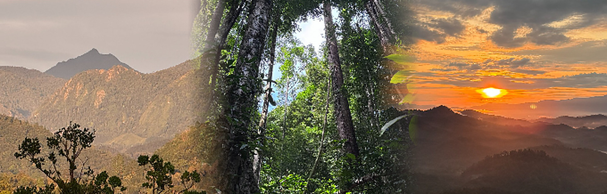
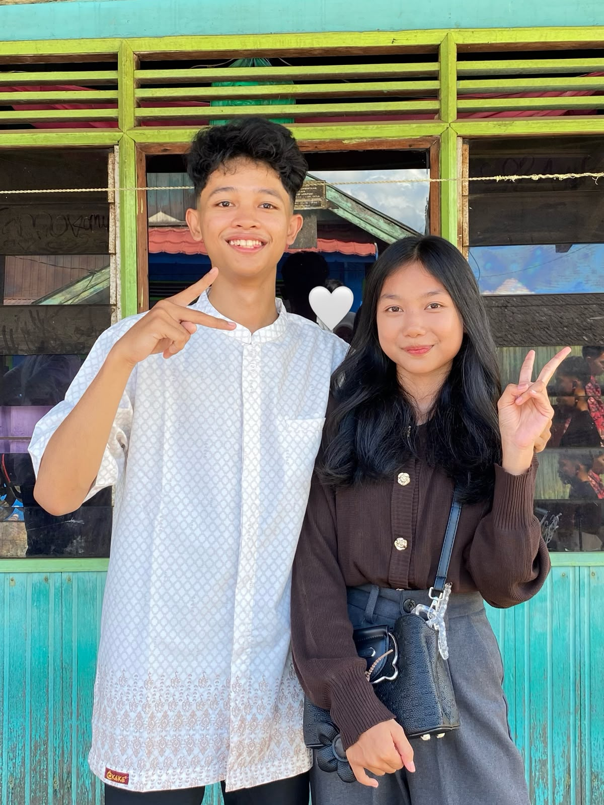
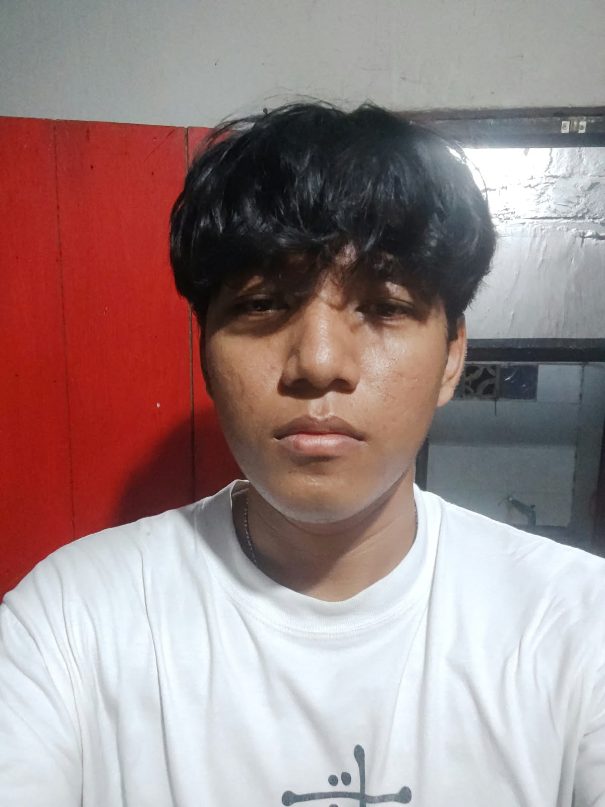

Tentang Jelajah Kalsel
Mengenal keindahan wisata Kalimantan Selatan

Tentang Website
Jelajah Kalsel merupakan website yang dibuat untuk memperkenalkan berbagai destinasi wisata alam yang terdapat di Kalimantan Selatan.
Website ini menyajikan informasi mengenai tiga destinasi utama, yaitu Loksado, Pegunungan Meratus, dan Tahura Sultan Adam.
Pengunjung dapat mengetahui berbagai daya tarik wisata, aktivitas, lokasi, estimasi perjalanan, serta informasi lainnya yang berkaitan dengan destinasi wisata tersebut.
Tujuan Website
Informasi Wisata
Memberikan informasi mengenai berbagai destinasi wisata alam di Kalimantan Selatan.
Informasi Lokasi
Membantu pengunjung mengetahui lokasi, jarak, dan gambaran perjalanan menuju destinasi wisata.
Referensi Wisata
Menjadi referensi bagi masyarakat dan wisatawan yang ingin menjelajahi keindahan Kalimantan Selatan.
Profil Anggota

Muhammad Maulana Yusuf
NIM: 2510131210010
Mahasiswa Pendidikan Komputer Universitas Lambung Mangkurat.
Pembagian Tugas:
Bersama anggota lainnya mengerjakan halaman Beranda dan halaman Tentang. Selain itu, bertanggung jawab dalam pembuatan halaman Loksado beserta halaman Selengkapnya dan informasi wisata yang berkaitan dengan Loksado.

Ahmad Afdhali Zikri
NIM: 2510131310014
Mahasiswa Pendidikan Komputer Universitas Lambung Mangkurat.
Pembagian Tugas:
Bersama anggota lainnya mengerjakan halaman Beranda dan halaman Tentang. Selain itu, bertanggung jawab dalam pembuatan halaman Pegunungan Meratus beserta halaman Selengkapnya dan informasi wisata yang berkaitan dengan Pegunungan Meratus.
Andi Dwi Sastro
NIM: 2510131310002
Mahasiswa Pendidikan Komputer Universitas Lambung Mangkurat.
Pembagian Tugas:
Bersama anggota lainnya mengerjakan halaman Beranda dan halaman Tentang. Selain itu, bertanggung jawab dalam pembuatan halaman Tahura Sultan Adam beserta halaman Selengkapnya dan informasi wisata yang berkaitan dengan Tahura Sultan Adam.